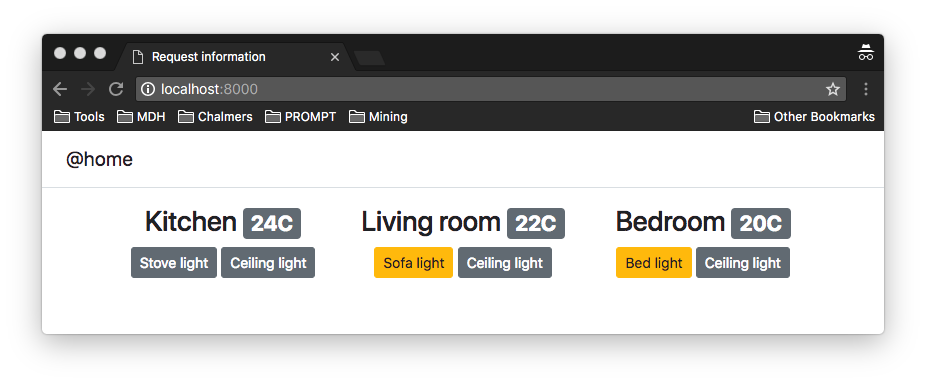
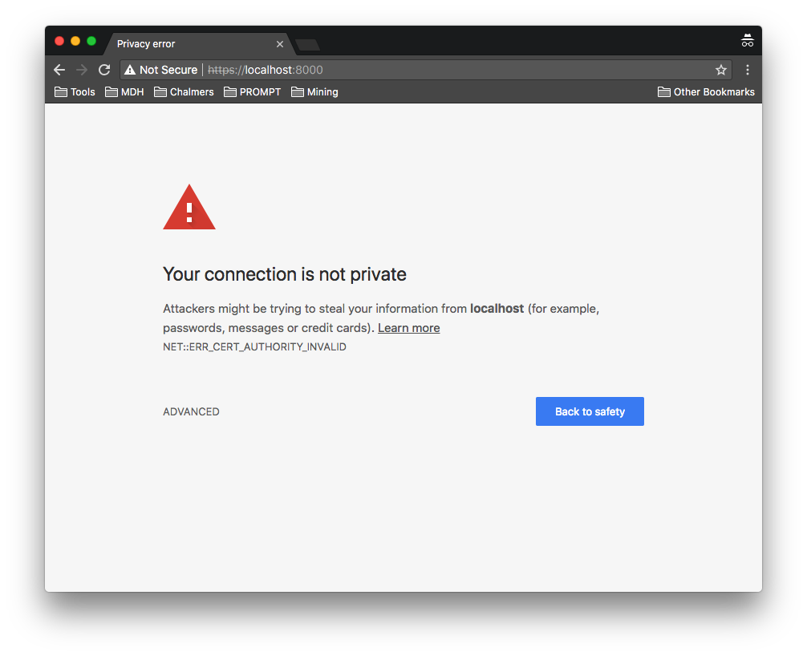

In this laboration you will create a minimal mock-up home monitor web application with rudimentary authentication and authorization.
The laboration is built up by two parts. In the first part, we build the core application that allows us to read the temperature and control the lights. In the second part, we add authentication to prevent unauthorized access to the application.
The final product of this is a web application intended to be open to attacks. The material presented in this laboration should not be seen as suggestions on how to build secure web applications. On the contrary, we have deliberately chosen some elements to make sure that the application contains security flaws!
After completion of the exercises you are expected to have a working, but flawed, authenticated web application.
The initial application consists of a single page displaying the temperature of the different rooms, the status of the different lights in the rooms, and some means of controlling the light. Your task is to create a web application that behaves similarly to the example application.
In the example application, the temperature is displayed as a badge on the header displaying the room name, and the lights are represented as buttons, where the color of the button indicates whether the light is on or off. Clicking the light buttons should toggle the light state.
The application consists of the server, the program running on the server side, and the client, the content downloaded and displayed or executed by the browser. To increase the responsiveness of the application, the client part contains code that asks the server for the state of the temperature sensors and lights at regular intervals, rather than just having the server embed this information when loading the app.
Base the application on the final product of laboration 1, which has the following application structure on the file system.
| Path | Description |
|---|---|
| public/ | Directory with static files served by the static fallback. |
| templates/ | Directory with template files. Used to render HTML responses. |
| httpd.js | The web application implementation. |
This time around the routing is a bit more complex since we need to route based on both the request method as well as the request path. Since we cannot work with actual devices we will use a mock-up data model containing the states of the various devices.
The application relies on the following paths in addition to the static routing. The application main page
is associated with the / path and is generated from a template to include the current status
of all the sensors. The client should regularly update the status of the lights and the values of the
temperature sensors by sending
AJAX GET requests to
/:room/lights/:light, where :room represents the room name, and
:light
represents the light name, and similarly for /:room/temperature. The response to such requests
is a
JSON encoding of
the sensor state. To switch the light on and off the client sends
AJAX POST requests to
/:room/lights/:light. The response to such requests
is a
JSON encoding of
the new sensor state.
| Method | Path | Description |
|---|---|---|
| GET | / | Application main page |
| GET | /kitchen/lights/stove | Status of stove light in kitchen |
| GET | /kitchen/lights/ceiling | Status of ceiling light in kitchen |
| GET | /livingroom/lights/sofa | Status of sofa light in living room |
| GET | /livingroom/lights/ceiling | Status of ceiling light in living room |
| GET | /bedroom/lights/sofa | Status of bed light in bedroom |
| GET | /bedroom/lights/ceiling | Status of ceiling light in bedroom |
| GET | /kitchen/temperature | Temperature of kitchen |
| GET | /livingroom/temperature | Temperature of living room |
| GET | /bedroom/temperature | Temperature of bedroom |
| POST | /kitchen/lights/stove | Switches stove light in kitchen |
| POST | /kitchen/lights/ceiling | Switches ceiling light in kitchen |
| POST | /livingroom/lights/sofa | Switches sofa light in living room |
| POST | /livingroom/lights/ceiling | Switches ceiling light in living room |
| POST | /bedroom/lights/sofa | Switches bed light in bedroom |
| POST | /bedroom/lights/ceiling | Switches ceiling light in bedroom |
GET requests to the corresponding application paths listed above should return a JSON encoding of the device state as defined by the data model. You can use the JSON.stringify function to create a JSON string from a JavaScript value.
POST request to the corresponding light paths listed above should flip the state of the light in the data model and return a JSON encoding of the new state of the light, used by the client to update its display.
Use two routing tables: one for GET requests and one for POST requests and select the appropriate routing table based on the method.
After the correct routing table has been selected based on the request method we need to select the appropriate routing method based on the path of the request. The simplest way of doing this would be to map each of the above paths to its own routing function responsible for getting and, for the lights, setting the values. Whether an appropriate solution or not depends on how the actual communication with the temperature sensors and the lights is performed. The details of the mapping between the routing table and the data model are left to your discretion, but the following routing extension present in many web application frameworks.
Allow for named URL segments, :[a-zA-Z_]+, in the paths in the routing table. The names
are used to create a parameter mapping from the given identifiers and the corresponding parts of the
request path.
For instance, matching the request path /kitchen/lights/stove with the route path
/:room/lights/:light would be successful and create the mapping:
{ "room" : "kitchen", "light" : "stove" }. This allows for the association of any number
of similar paths to one handler with the parameters passed by storing the parameters in the
params
property on the request object.
Using route parameters its easy to map request paths to a mock-up data model and deliver the right response.
The web application is accessed using the / request path. This serves the applications
main page. In the example,
the temperature is displayed as a badge on
the
header displaying the room name, and the lights are represented as buttons, where the color of the button
indicates whether the light is on or off.
Feel free to reuse the example design, or experiment with Bootstrap to create your own rendition.
In addition to HTML content, the page contains JavaScript used to communicate with the server. The example
solution uses a refresh
function that is set to be called every 5 seconds. The refresh function uses
two tables that map element identifiers of the controls to the associated
paths. For each identifier a GET request to the corresponding path, which results in a JSON
encoding of the value of the device.
While you can use XMLHttpRequest to perform the GET and JSON.parse to parse the result, you can consider using JQuery to perform both actions in one, in particular jQuery.getJSON().
In the example solution, the click event is handled by the clickLight handler
passing the identifier of the element as parameter. The clickLight handler uses the identifier
to find the corresponding path and POSTs an empty request. The server handles the POST request and responds
with the new state of the light, used by the client to update the display.
While you can use XMLHttpRequest to perform the POST, you can consider using JQuery.post() to perform it.
The JQuery included with Bootstrap is JQuery slim, which excludes AJAX. Hence, if you want to use JQuery you need to replace it with the full JQuery release. See Downloading JQuery for more information.
After having received a response from the server from a GET or a POST request, the client should update the display of the device associated with the path, i.e., the HTML element identified by the identifier in the example solution. This element can be fetched by Document.getElementByID and updated accordingly.
Instead of Document.getElementByID, the
example solution uses the jQuery ID Selector to
get the element associated
with an identifier. To set the text on the span displaying the
temperature the jQuery .text() function is used, and
to change the status of the lights the class of the button representing the
light is changed using the jQuery .attr() function.
The @home application we have created thus far contains no authentication. If we were to make this application available online anyone could use it to read the status of the home and even control it. This is clearly not a good idea!
To remedy the situation we need to add authentication (and authorization) to our application. Authentication is the process of establishing the identity of the user, while authorization is the process of verifying that a user is allowed to perform a certain action. Your task is to create a web application that behaves similarly to the example application.
In this exercise, we will attempt to craft our own authentication and authorization mechanism adhering to the following authentication and authorization flow:
Similar to the Basic HTTP authorization we will send the authentication information and session information in clear text to the server. This means that we will have to rely on some means to protect the communication with the server, e.g., SSL/TLS.
Creating an HTTPS server in node.js is relatively easy: all that is required is to import https
instead of http and provide the server with a signed certificate and a private key. To obtain
a signed certificate one has to create a Certificate Signing Request (CSR) and pass it to a
Certificate Authority (CA) for signing. In our situation, however, this is not possible: CAs only sign
proper domain names and not local unroutable
addresses such as localhost (127.0.0.1) which we use to run web applications. The solution is a
self-signed certificate, where we use our own private key to sign the CSR. Heroku provides a
short howto detailing how to create
self-signed certificates. The generated secret key server.key and certificate
server.crt
are both in .pem format and can be given as options to the server on start. We add those to a
cert directory creating the following application structure.
| Path | Description |
|---|---|
| cert/ | SSL certificate and secret key. |
| public/ | Directory with static files served by the static fallback. |
| templates/ | Directory with template files. Used to render HTML responses. |
| httpd.js | The web application implementation. |
Once we have the certificate and the private key we can create an HTTPS server as follows.
const https = require('https');
const fs = require('fs');
const options = {
key: fs.readFileSync('cert/server.key'),
cert: fs.readFileSync('cert/server.crt')
};
https.createServer(options, (req, res) => {
...
}).listen(8000);Note that since the certificate is self-signed it's not going to be trusted by the browser, which will complain about an untrusted site. You can bypass this warning to continue to load the page. The exact way of doing this depends on the browser - in Chrome it is under ADVANCED. After you have bypassed the warning, reloading the page should not trigger it again (but, e.g., closing the tab or the window most likely will). Note that Chrome warns that the connection is Not Secure, since the certificate cannot be verified.
If you are working with a proper domain name you can get a free certificate for that domain via, e.g., Let's Encrypt. Let's Encrypt will require you to prove you are the rightful owner of the domain, and the result is a certificate that is trusted by the browsers.
As is common, we will use HTTP Cookies
to carry the session information.Cookies are a form of simple client-side storage associating a name
with a value. We will use a cookie athome-session to carry
the session information for the @home application.
Cookies are set by a special Set-Cookie response header and are automatically sent back by the client as a special Cookie request header in each subsequent request to the same server (subject to domain, path and time restrictions). This makes cookies a simple choice for implementing rudimentary session-based authentication and authorization.
On successful login, a new session unique session identifier is allocated. This can be done in several ways with different pros and cons. In this exercise we will select the simplest possible and let the server use consecutive session identifiers, starting from one and incrementing by one for each new session. On allocation, the session identifiers are stored in the memory of the server for use in subsequent authorizations.
When a protected resource is accessed the server looks for the athome-session cookie in the
cookie header of the request. If the cookie is found and contains a valid session identifier access is
granted. Otherwise, access is denied and the client should be forwarded to the login page.
Forwarding to a login page can be done by crafting a response using the
302 response code
containing a Location
header pointing to the target page. In our case we want to forward to /login, which returns
the login page.
To find the athome-session cookie the server needs to parse the cookie header, which is
available as headers.cookie on the request object. Parsing of the cookie can be done by using
the node.js cookie library. This library contains
a parse function that takes the contents of the cookie header and gives back an object
representing the parsed cookies. Adding the cookie library to the application with NPM creates the
following application structure.
| Path | Description |
|---|---|
| cert/ | SSL certificate and secret key. |
| public/ | Directory with static files served by the static fallback. |
| node_modules/ | Directory with installed libraries. Contains cookie if installed. |
| templates/ | Directory with template files. Used to render HTML responses. |
| package-lock.json | Automatically generated by NPM. A manifestation of the manifest. |
| httpd.js | The web application implementation. |
Which application endpoints should be protected? It depends. Clearly, the main page and the sensor endpoints
should be protected, while the /login endpoint must not be protected (otherwise, we can't log in!).
This entails that (some of) the static files under public must also not be protected since the
/login endpoint makes use of them. For simplicity, we let all the files in public be unprotected -
indeed, if we want to serve protected static files we better put them in a different directory and modify
the static server accordingly. In summary, below follows an overview of the protection status of the
different endpoints.
| Endpoints | Protection status |
|---|---|
| static files | Unprotected |
| /, /kitchen/*, /livingroom/*, /bedroom/*, /logout | Protected |
| /login | Unprotected |
The implementation details of the endpoint protection are left to your discretion.
We add a GET handler for /login to serve the login page, which contains an HTML form with an
input for the username and one for the password in addition to a login button. We set the form to POST
the content to /login.
To handle the login requests we add a POST handler for /login on the server. The POST handler
reads the credentials from the body of the request and verifies it against its own records. If the
credentials match, the server responds with a 302 redirect to / passing
Set-Cookie header that sets athome-session to the fresh session identifier.
If the credentials don't match, the server returns a version of the login page, where an error message is
displayed.
In order for the server to be able to verify a login request, the server needs access to user credentials.
For simplicity, we store the username, password pairs as properties in an object, where each property
corresponds to a username and stores the password, e.g.,
{ 'daniel' : 'fisksoppa' }.
We store the credentials object JSON encoded in the passwd file,
creating the following application structure.
| Path | Description |
|---|---|
| cert/ | SSL certificate and secret key. |
| public/ | Directory with static files served by the static fallback. |
| node_modules/ | Directory with installed libraries. Contains cookie if installed. |
| templates/ | Directory with template files. Used to render HTML responses. |
| package-lock.json | Automatically generated by NPM. |
| passwd | JSON encoded user information. |
| httpd.js | The web application implementation. |
Compared to exercise 1 we modify the application main page to contain a logout button with an
associated onclick handler that POSTs an empty message to /logout.
Logout looks up the session cookie athome-session in the request and extracts the
session identifier. Thereafter the session is invalidated by removing the session identifier from the
collection of active
sessions. When the POST request has finished the user is logged out and the client forwards to the
/login page.
The final product of this is an authenticated web application that allows a user to log in to access the main application.
When logged in the user is presented with a set of temperature sensors and lights and has the option of logging out.
The application should be similar to the example application and should follow the structure mandated by this document.